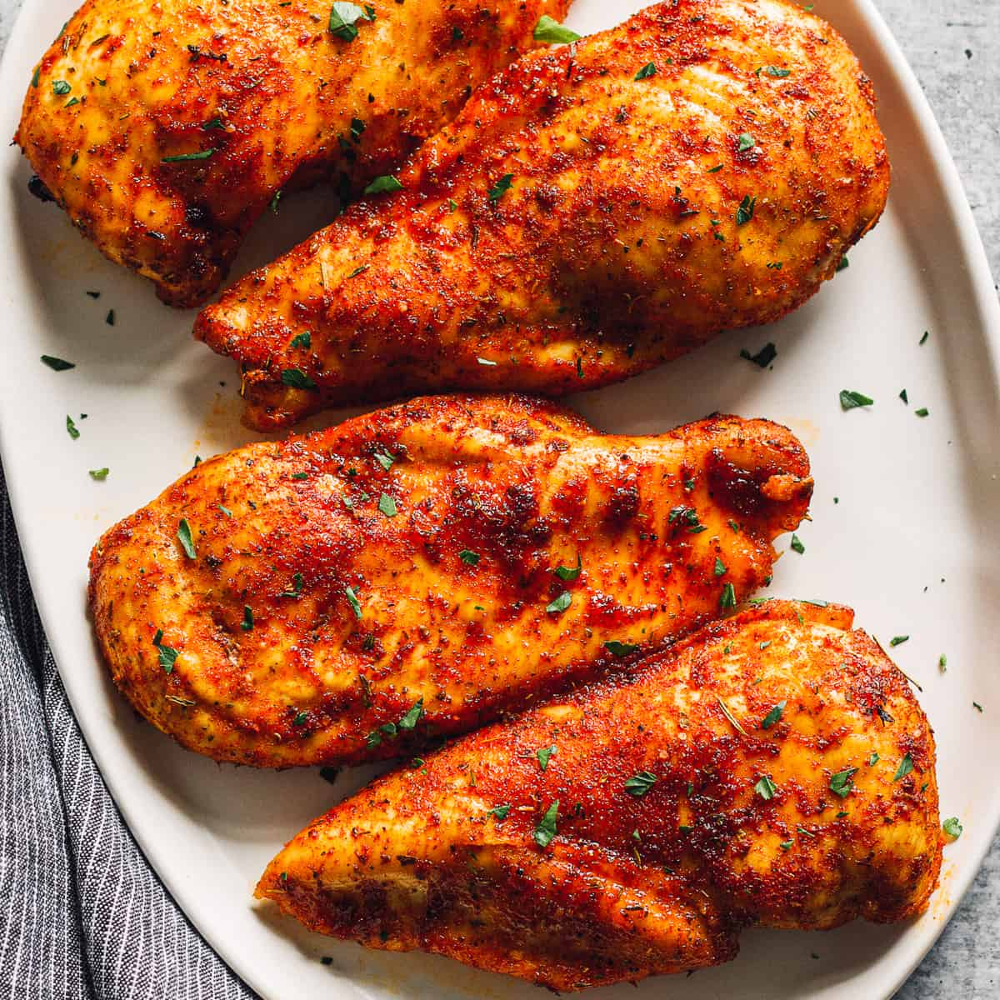

Buffalo Chicken Wings

Description
Since food for air travel needs to be prepared far in advance, airlines back in the day created a special cut of chicken breast that wouldn't dry out as much as normal.
Ingredients
- 1 whole chicken
- 1 drizzle olive oil
- kosher salt to taste
Steps
- Whisk together flour, paprika, cayenne pepper, and salt in a small bowl.
- Place chicken wings in a single layer in a 9x13-inch glass baking dish. Sprinkle flour mixture over top and toss until wings are evenly coated. Cover and refrigerate for 1 to 1 1/2 hours.
- Add about 1 inch oil to a deep, heavy skillet; heat to 375 degrees F (190 degrees C). (The oil should be just enough to cover wings entirely.)